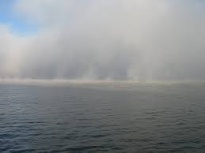

Туман
Тума́н — атмосферное явление, скопление воды в воздухе, образованное мельчайшими частичками водяного пара (при температуре воздуха выше -10 °C — капельки воды, от -10 до -15 °C — смесь капелек воды и кристалликов льда, при температуре ниже -15 °C — кристаллики льда, сверкающие в солнечных лучах или в свете луны и фонарей).Согласно Терминам и определениям» РМГ 75-2014 «туман есть взвесь очень мелких капель жидкой воды в газе, уменьшающая его прозрачность, а изморозь — взвесь очень мелких кристаллов льда (снега) в газе, уменьшающая его прозрачность».
|
|
Подземный туман
Поземный туман — туман, низко стелющийся над земной поверхностью (или водоёмом) сплошным тонким слоем или в виде отдельных клочьев, так что в слое тумана горизонтальная видимость составляет менее 1000 м, а на уровне 2 м — превышает 1000 м (обычно составляет, как при дымке, от 1 до 9 км, а иногда 10 км и более). Наблюдается, как правило, в вечерние, ночные и утренние часы. Отдельно отмечается поземный ледяной туман — наблюдаемый при температуре воздуха ниже −10..−15° и состоящий из кристалликов льда, сверкающих в солнечных лучах или в свете луны и фонарей.Просвечивающий туман
Просвечивающий туман — туман с горизонтальной видимостью на уровне 2 м менее 1000 м (обычно она составляет несколько сотен метров, а в ряде случаев снижается даже до нескольких десятков метров), слабо развитый по вертикали, так что возможно определить состояние неба (количество и форму облаков). Чаще наблюдается вечером, ночью и утром, но может наблюдаться и днём, особенно в холодное полугодие при повышении температуры воздуха. Отдельно отмечается просвечивающий ледяной туман — наблюдаемый при температуре воздуха ниже −10..−15° и состоящий из кристалликов льда, сверкающих в солнечных лучах или в свете луны и фонарей. Туман — сплошной туман с горизонтальной видимостью на уровне 2 м менее 1000 м (обычно она составляет несколько сотен метров, а в ряде случаев снижается даже до нескольких десятков метров), достаточно развитый по вертикали, так что невозможно определить состояние неба (количество и форму облаков). Чаще наблюдается вечером, ночью и утром, но может наблюдаться и днём, особенно в холодное полугодие при повышении температуры воздуха. Отдельно отмечается ледяной туман — наблюдаемый при температуре воздуха ниже −10..−15° и состоящий из кристалликов льда, сверкающих в солнечных лучах или в свете луны и фонарей.Внутримассовый туман
Внутримассовые туманы преобладают в природе, как правило, они являются туманами охлаждения. Их также принято разделять на несколько типов:
Радиоционный туман
Радиационные туманы — туманы, которые появляются в результате радиационного охлаждения земной поверхности и массы влажного приземного воздуха до точки росы. Обычно радиационный туман возникает ночью в условиях антициклона при безоблачной погоде и лёгком бризе. Часто радиационный туман возникает в условиях температурной инверсии, препятствующей подъёму воздушной массы. После восхода солнца радиационные туманы обычно быстро рассеиваются. Однако в холодное время года в устойчивых антициклонах они могут сохраняться и днём, иногда много суток подряд. В промышленных районах может возникнуть крайняя форма радиационного тумана — смог.
Фронтальный туман
Адвективные туманы — образуются вследствие охлаждения тёплого влажного воздуха при его движении над более холодной поверхностью суши или воды. Их интенсивность зависит от разности температур между воздухом и подстилающей поверхностью и от влагосодержания воздуха. Эти туманы могут развиваться как над морем, так и над сушей и охватывать огромные пространства, в отдельных случаях до сотен тысяч км². Адвективные туманы обычно бывают при пасмурной погоде и чаще всего в тёплых секторах циклонов. Адвективные туманы более устойчивы, чем радиационные, и часто не рассеиваются днём. Морской туман — адвективный туман, возникший над морем в ходе переноса холодного воздуха на тёплую воду. Этот туман является туманом испарения. Туманы такого типа часты, например, в Арктике, когда воздух попадает с ледового покрова на открытую поверхность моря.Оп данной теме это все, у нас еще много интересной информации, просто переходите по ссылкам.